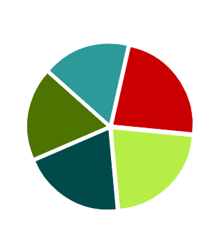

浅谈数据可视化
初探可视化
-
可视化概念
指用于创建图形、图像或动画，以便交流沟通讯息的任何技术和方法
-
可视化分类
数据可视化
数据可视化主要是借助于图形化手段，清晰有效地传达数据信息。
柱状图
柱状图是最常见的图表，也最容易解读。它的适用场合是二维数据集（每个数据点包括两个值x和y），但只有一个维度需要比较。假币数量分布就是二维数据，"地区"和"假币张数"就是它的两个维度，但只需要比较"假币张数"这一个维度。柱状图利用柱子的高度，反映数据的差异。肉眼对高度差异很敏感，辨识效果非常好。柱状图的局限在于只适用中小规模的数据集。
折线图
折线图适合连续的二维大数据集和单个离散的数据点等场合。
饼图
饼图是一种应该避免使用的图表，因为肉眼对面积大小不敏感。
举个栗子：


上图中，左侧饼图的五个色块的面积排序，不容易看出来。换成柱状图，就容易多了。一般情况下，总是应该用柱状图替代饼图。但是有一个例外，就是反映某个部分占整体的比重，比如要展示垃圾邮件占总邮件的百分比。
散点图
散点图适用于三维数据集的比较。
举个栗子：
气泡图
气泡图其实是散点图的一种变体，通过每个点的面积大小，反映第三维，通过颜色反应第四维。因为用户不善于判断面积大小，所以气泡图只适用不要求精确辨识第三维的场合。
举个栗子：
雷达图
雷达图适用于多维数据（四维以上），且每个维度必须可以排序的。但是，它有一个局限，就是数据点最多6个，否则无法辨别，因此适用场合有限。
举个栗子：
矩形树图
雷达图适用于多维数据（四维以上），且每个维度必须可以排序的。但是，它有一个局限，就是数据点最多6个，否则无法辨别，因此适用场合有限。
举个栗子：
热力图
雷达图适用于多维数据（四维以上），且每个维度必须可以排序的。但是，它有一个局限，就是数据点最多6个，否则无法辨别，因此适用场合有限。
举个栗子：
仪表盘
多用于实时数据的可视化
举个栗子：
动态刷新
雷达图适用于多维数据（四维以上），且每个维度必须可以排序的。但是，它有一个局限，就是数据点最多6个，否则无法辨别，因此适用场合有限。
举个栗子：
中国地理图
多用于实时数据的可视化
举个栗子：
Echarts
一个纯 Javascript的图表库，可以流畅的运行在PC和移动设备上，兼容当前绝大部分浏览器（IE8/9/10/11，Chrome，Firefox，Safari等），底层依赖轻量级的 Canvas 类库 ZRender，提供直观，生动，可交互，可高度个性化定制的数据可视化图表。
<!DOCTYPE html>
<html>
<head>
<meta charset="utf-8">
<title>ECharts</title>
<!-- 引入 echarts.js -->
<script src="echarts.js"></script>
</head>
<body>
<!-- 为ECharts准备一个具备大小（宽高）的Dom -->
<div id="main" style="width: 600px;height:400px;"></div>
<script type="text/javascript">
//代码片段
</script>
</body>
</html>Echarts
一个纯 Javascript的图表库，可以流畅的运行在PC和移动设备上，兼容当前绝大部分浏览器（IE8/9/10/11，Chrome，Firefox，Safari等），底层依赖轻量级的 Canvas 类库 ZRender，提供直观，生动，可交互，可高度个性化定制的数据可视化图表。
// 基于准备好的dom，初始化echarts实例
var myChart = echarts.init(document.getElementById('main'));
// 指定图表的配置项和数据
var option = {
title: {
text: 'ECharts 入门示例'
},
tooltip: {},
legend: {
data:['销量']
},
xAxis: {
data: ["衬衫","羊毛衫","雪纺衫","裤子","高跟鞋","袜子"]
}
};
// 使用刚指定的配置项和数据显示图表。
myChart.setOption(option);D3.js
D3 的全称是（Data-Driven Documents），顾名思义可以知道是一个被数据驱动的文档。听名字有点抽象，说简单一点，其实就是一个 JavaScript 的函数库，使用它主要是用来做数据可视化的。
<script src="d3.v3.min.js"></script>参考文献
- 阮一峰的个人网站：http://www.ruanyifeng.com/blog/2014/11/basic-charts.html
- Data Visualization with JavaScript：http://jsdatav.is/intro.html
/